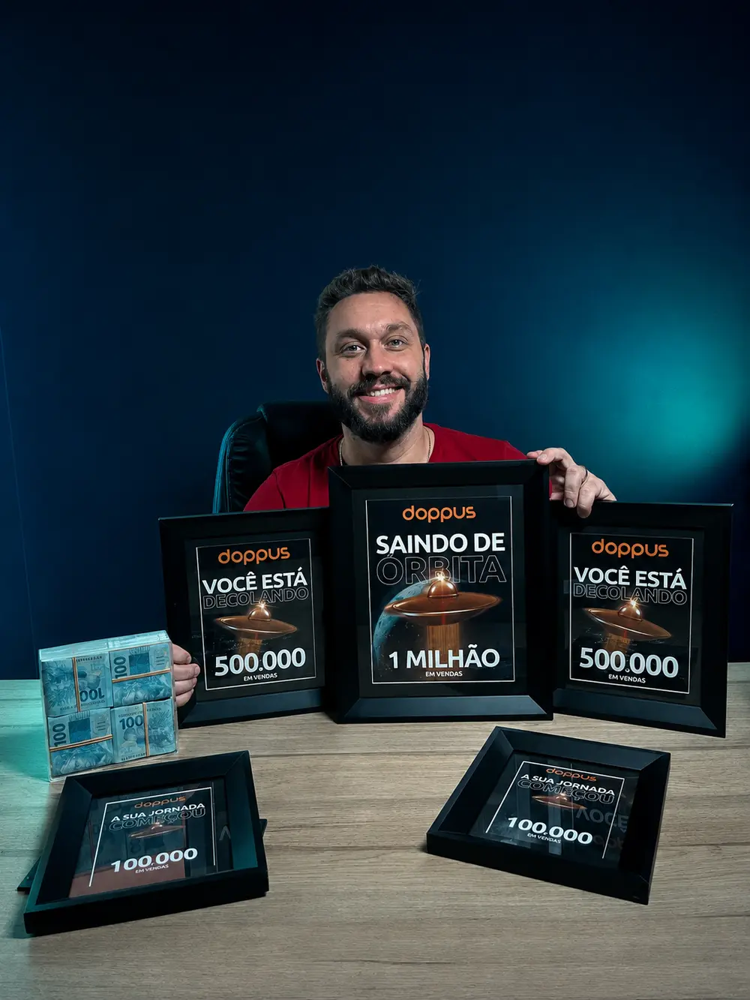
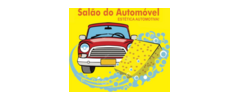
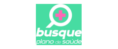
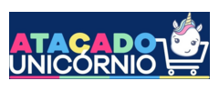
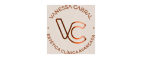
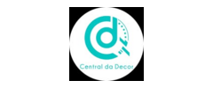

Aquisição Conversão Escala
Conectando Marketing e Vendas para um Crescimento Previsível.
Atuo do diagnóstico à execução, integrando tráfego pago, comercial, processos e equipe.
à liderança
e produto
na prática
Diagnóstico
Onde as oportunidades estão sendo perdidas?
Toque no problema e veja onde posso contribuir.
Analiso campanhas, criativos, públicos e jornada para melhorar a qualidade das oportunidades geradas.
Identifico falhas na qualificação, abordagem, acompanhamento e integração entre marketing e vendas.
Transformo métricas de tráfego, vendas e operação em prioridades claras de ação.
Estruturo posicionamento, oferta, aquisição e processo comercial para validar a oportunidade.
Organizo prioridades, processos, equipe, ferramentas e indicadores para sustentar uma nova etapa de crescimento.
Organizo indicadores, processos e rotinas para tornar o crescimento mais controlável e sustentável.
Método
Do diagnóstico à execução
- 01DiagnosticarEncontro o gargalo.
- 02PriorizarDefino o que atacar primeiro.
- 03ExecutarColoco o plano em movimento.
- 04OtimizarMeço, ajusto e evoluo.

Experiência comprovada
Capacidade construída na prática.
de faturamento gerado em diferentes produtos
diagnosticadas em diferentes segmentos
liderados em equipe multidisciplinar
plano aprovado por equipes executivas nacionais e internacionais
destaque em diferentes empresas e plataformas
Mão na massa
O que eu consigo fazer no dia a dia.
Clique em uma aba e veja como atuo na prática.Toque em uma aba e veja como atuo na prática.↘
01
Na prática
Tráfego pago
- Planejo e configuro campanhas
- Instalo pixels e conversões
- Otimizo, escalo e analiso resultados
- Direciono criativos e copies
Ferramentas
∞Meta AdsAGoogle Ads
Também utilizo
CCanva✕CapCutNNotionⅡTrello⌃ClickUpSSlack
Clientes e projetos
Experiência em diferentes mercados.
Marcas, projetos e operações que fizeram parte da minha trajetória.





Feedbacks e referências
O que dizem sobre meu trabalho.
Acompanhei o início da trajetória do Phillipe no marketing digital e sua evolução de perto. Sempre demonstrou lealdade, versatilidade e qualidade na execução, assumindo diferentes responsabilidades e se destacando especialmente no tráfego pago.
Phillipe tem facilidade para compreender negócios de diferentes segmentos, identificar gargalos e transformar diagnósticos em planos de ação. Nas reuniões, combina visão estratégica, comunicação clara e forte capacidade comercial.
Phillipe consegue ir além da operação de campanhas. Une domínio de tráfego pago, visão estratégica e capacidade de compreender rapidamente diferentes negócios, transformando dados em decisões práticas.
O planejamento desenvolvido por Phillipe para nossa entrada no Brasil demonstrou profundidade de pesquisa, visão de mercado e domínio de posicionamento, canais, orçamento e indicadores. O trabalho foi muito bem recebido pelas equipes brasileira e internacional.
Construímos uma operação do zero, e Phillipe foi fundamental para transformar ideias em estrutura, equipe e resultado. Ele conecta estratégia, tráfego, vendas e operação e assume responsabilidade pela execução.
Vamos conversar?
O próximo feedback pode ser o seu.
Toda oportunidade que chega e não avança representa uma receita que poderia ter entrado.
CONVERSAR COMIGO